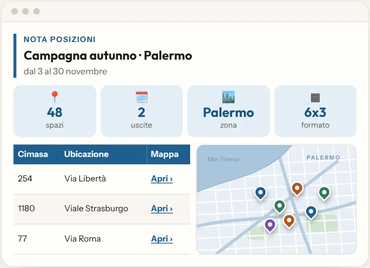
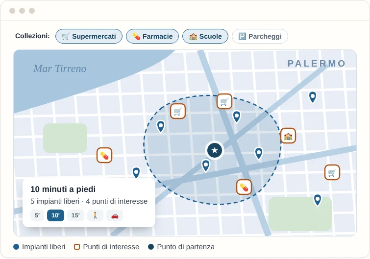
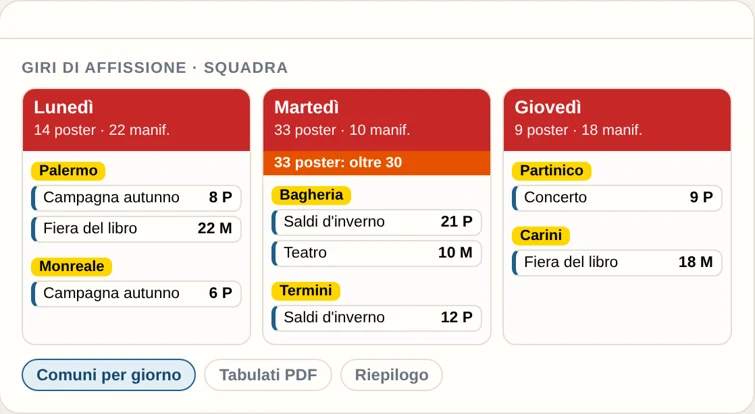
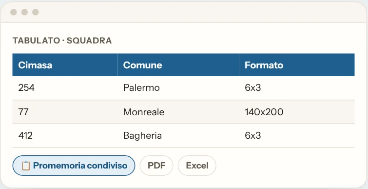
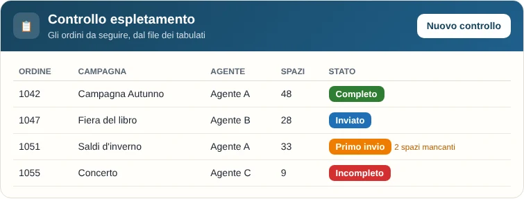
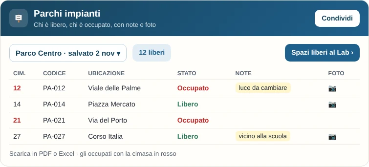
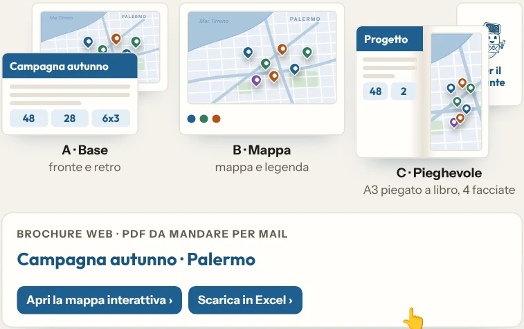

Labooh, l'app che uso per organizzare le affissioni pubblicitarie (OOH).
Coordino le affissioni in tutta la Sicilia occidentale: più di 60 campagne ogni 14 giorni, sei squadre, agenti e uffici. Invisibile ma sempre al lavoro: Labooh organizza squadre, giri e parchi, scrive mail e prepara note posizioni e brochure. Non so programmare: l'ho costruita un pezzo alla volta, con l'aiuto dell'AI.
L'app è ad accesso riservato: puoi lasciare la tua richiesta. Può metterci un minuto ad aprirsi.
Cosa fa
Dal file Excel della campagna al lavoro in strada, fino al cliente.

L'elenco degli impianti, con la mappa.
Carico l'Excel delle posizioni ed esce un PDF ordinato, pronto da mandare.
- I numeri della campagna in testata: spazi, uscite, zona, formato
- Il link di ogni impianto, che si apre in Google Maps
- Trova da sola le posizioni sbagliate: in mare, fuori dal comune o doppie

La mappa che ragiona come il cliente.
Parto dagli spazi liberi e dai luoghi che contano per il cliente, e vedo cosa c'è vicino, a piedi o in auto.
- Collezioni di punti di interesse: supermercati, farmacie, scuole
- Raggi e isocrone: cosa si raggiunge in 5, 10 o 15 minuti
- Una mappa interattiva da mandare al cliente

Organizzo e pianifico i giri di affissione.
Per ottimizzare l'espletamento e garantire puntualità su tutti i comuni.
- Scelgo in che giorno andare in ogni comune
- Le campagne si dividono da sole, e le ritocco a mano
- Tabulati per ogni giro e riepilogo di poster e manifesti

I fogli pronti per ogni squadra.
Dal file della campagna ai tabulati per chi lavora in strada, senza ricopiare niente.
- Tabulati per squadra, in PDF ed Excel
- Riepilogo del materiale da ritirare
- Promemoria salvati online e condivisi con i colleghi

Ogni ordine sotto controllo.
Dal file dei tabulati l'elenco degli ordini da seguire, con lo stato di ognuno.
- Stati a colori: Incompleto, Primo invio, Inviato, Completo
- Gli spazi mancanti in evidenza
- Si condivide con i colleghi: possono solo vedere o anche modificare

Il parco impianti, sempre aggiornato.
Chi è libero, chi è occupato e da chi, impianto per impianto.
- Codice, ubicazione e cliente; gli occupati in rosso
- Note e una foto per ogni impianto; i parchi si salvano e si aggiornano
- Gli spazi liberi vanno al Lab e diventano brochure e mappa per il cliente

Brochure da stampare o da mandare per mail.
Il testo del progetto scritto con l'AI, da rileggere, e la brochure impaginata con i dati della campagna.
- Da stampare in A4, A3 o pieghevole
- PDF con la mappa interattiva e l'Excel da scaricare
- Le foto degli impianti

Due righe dettate, una mail fatta bene.
Scrivo o detto di corsa e GhostInk ne fa una mail, un testo o un messaggio per chat.
- Lei, Tu o Voi; formale, cordiale o amichevole
- Sistema la forma, non inventa i fatti
- Le ultime restano a portata di mano
App web per PC e telefono (React e Node.js), database PostgreSQL, mappe OpenStreetMap, PDF ed Excel creati nel browser, liste condivise con permessi. Account con permessi, privacy e copie di sicurezza automatiche. Tutto su servizi gratuiti, costruita con l'aiuto di un'intelligenza artificiale (Claude). È un cantiere aperto: ogni settimana migliora qualcosa.
Vuoi vederla da vicino?
L'app è ad accesso riservato: il codice e i dati di lavoro non sono pubblici.
Può metterci un minuto ad aprirsi.